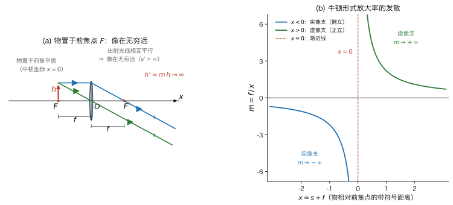

问题：对于横向放大率 m=h′/h，当物置于前焦点 F（物方焦点）时，为什么 m 趋于无穷大？此时 h′ 与 h 分别是什么？
0. 结论
物恰好置于前焦点 F（即物面与前焦平面重合）时：
- 出射光为平行光，像位于无穷远，即像距 s′→∞；
- 横向放大率发散，m=h′/h→∞（更准确地说是 ∣m∣→∞，符号取决于趋近方向）；
- h 保持有限且非零，h′=mh 因而发散——不存在有限位置、有限大小的实像。
这一"无穷大"具有极限意义：它是物距趋于焦距时的理想化极限，而非可实际观测的物像关系。
1. 符号约定
采用带正负号的笛卡尔坐标符号系统，主光轴右向为正：
| 符号 |
意义 |
| O |
薄透镜光心，取为坐标原点 x=0 |
| s |
物距（带符号）：实物 s<0，虚物 s>0 |
| s′ |
像距（带符号）：实像 s′>0，虚像 s′<0 |
| f |
焦距（带符号）：凸透镜 f>0，两侧同为空气时 f′=f |
| F |
前焦点（物方焦点），坐标 xF=−f |
| F′ |
后焦点（像方焦点），坐标 xF′=f |
| h |
物高（带符号），h′>0 表示正立 |
| m=h′/h |
横向放大率 |
高斯公式取
s′1−s1=f1.(1)
2. 横向放大率的两种形式
2.1 高斯形式
利用过光心 O 的射线（不偏折），由相似三角形可得
m=hh′=ss′.(2)
例如物在二倍焦距处 s=−2f，则 s′=2f，m=−1，即倒立等大实像，符号负号表示倒立。
2.2 牛顿形式
从焦点 F、F′ 起算带符号距离 x,x′：
x=s−xF=s+f,x′=s′−xF′=s′−f.
代入式 (1)，整理得牛顿物像关系
xx′=−f2.(3)
将 x′=−f2/x 代入 m=s′/s=(x′+f)/(x−f)，化简得牛顿形式的横向放大率
m=hh′=xf=−fx′.(4)
注：部分教材把 x 定义为自 F 向左（逆光传播方向）取正的距离，此时式 (4) 写作 m=−f/x。符号差异源于 x 的正向约定，发散结论不受影响，见第 3 节。
3. 物恰在前焦点：为什么 m→∞
3.1 代数推导
物置于前焦点 F，即 s=xF=−f。由牛顿变量
代入式 (4)：
m=xf=0f→∞.(5)
用高斯形式同样可得：式 (1) 令 s=−f，有
s′1=f1−f1=0⟹s′=∞.(6)
即像距发散。再由式 (2)，s′=∞、s=−f 有限，故 ∣m∣=∣s′/s∣→∞。
3.2 物理解释
从位于 F 的物点发出的光，经透镜后平行于主光轴出射；从位于前焦平面内任意一点的物点发出的光，经透镜后成为一族平行光线（平行于从该点到光心连线所对应的倾角）。平行光线只在无限远处"相交"，对应：
- 像距 s′=∞；
- 不存在有限距离上的实像。
把物体视为有限高度 h=0 的线段置于前焦平面时，每一物点族出射光保持平行且彼此之间的几何关系不变——像在无穷远"展开"，形式化地表现为 h′→∞。
4. 此时 h′ 与 h 分别是什么
| 量 |
取值 |
说明 |
| h |
有限、非零 |
物体的实际高度，是可直接测量的几何量 |
| h′ |
∞（极限意义） |
h′=mh，因 m→∞ 而发散 |
精确表述：h′→∞ 并非存在一个位于有限处的"巨大的像"，而是指下述极限过程——当物距 s 从两侧趋于 −f（即物面趋向前焦平面）时，像距与像高同时发散，且发散速率满足 m=h′/h∼f/x。物距恰好等于焦距这一孤立点上，光学系统根本不给出有限实像，故 h′ 在该点不取有限值。
若物体完全退化为轴上的一个点（h=0），则其像也退化为一条沿轴的平行光线，m 的上述比率出现 0/0 型不定式；此时宜改用角放大率（出射角/入射角）来描述，不再讨论横向放大率。
5. 示意图

Figure 1. 物置于前焦平面时，出射光平行，像在无穷远（a）；牛顿形式 m=f/x 在 x=0 处为垂直渐近线（b）。
分图 (a) 为光路图：物置于前焦平面（牛顿坐标 x=0），过光心 O 与平行于主光轴的两条特征光线在像方相互平行，二者永不相交，对应"像在无穷远"；物高 h 有限，而 h′=mh→∞。
分图 (b) 为牛顿形式放大率 m=f/x 随 x 的变化：x=0（物在前焦点）处为垂直渐近线，从实像支（x<0，倒立）与虚像支（x>0，正立）两侧 ∣m∣ 均发散；与图 (a) 的物理解释互为印证。
图中符号与正文一致：O 为光心，F,F′ 为前、后焦点，f 为焦距，h 为物高；光线自左向右传播，主光轴右向为正。
6. 易混淆点
- "放大率为无穷大"≠"出现无限大的实像"。它刻画的是像距发散：像退到无穷远，且随物面趋向前焦平面而无限放大。
- 前焦点处不成有限实像。物在焦点上，像距 →∞，对应物像位置关系曲线中的垂直渐近线 l=−f。
- 符号约定无关紧要。无论采用 m=−f/x 还是 m=f/x，x→0 时 ∣m∣→∞ 的结论一致。
page comments
via GitHub · sign in to reply
Comments are powered by utterances and load only when you open them. You can also write in Issues.